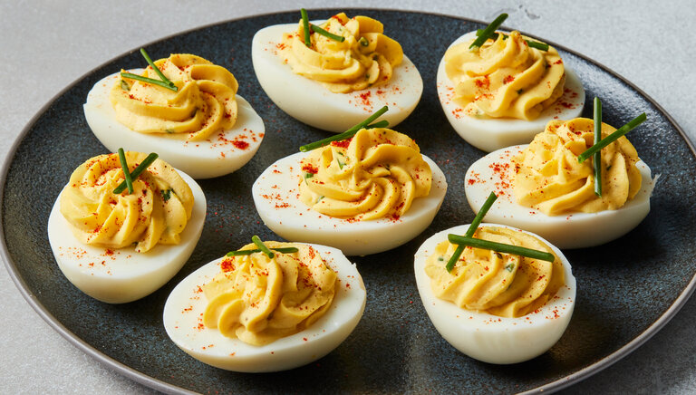

Virginia's Deviled Eggs

Description:
I boil 7 eggs because sometimes they crack and are not usable.
You can always eat the 7th egg.
Fresh eggs are best. I get my eggs at the local Farmers Market.
Check date on store eggs and get the freshest.
If you bring eggs to room temperature they are less likely to crack.
Good Luck and enjoy.
Ingredients:
- 7 eggs
- 3 Tbsp Best Food Mayonnaise
- 1 ½ Tbsp yellow mustard
- Salt (to taste)
- Fresh cracked black pepper (to taste)
- Paprika (optional)
Directions:
- Bring 7 extra large eggs to room temperature
- Put in kettle and cover with tap water
- Bring to a boil and turn down fire to slow boil for 5 minutes
- Turn off fire and let stand for 20 minutes
- Drain and cool for 20 minutes
- Peel, cut in half, remove yoke and mash
- Add 3 Tbsp Best Food Mayonnaise
- Add 1 ½ Tbsp yellow mustard
- Add salt and pepper to taste
- Mash together thoroughly
- Fill egg halves
- Add a dash of paprika to the top of each egg (optional)